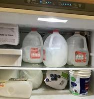

A witness in a London High Court case was caught using smart glasses connected to his phone to receive real-time coaching while giving evidence during cross-examination. "In my judgement, from what occurred in court, it is clear that call was made, connected to his smart glasses, and continued during his evidence until his mobile phone was removed from him," said Judge Raquel Agnello KC. "Not only have I held that Jakstys was untruthful in denying his use of the smart glasses and his calls to abra kadabra, but the effect of this is that his evidence is unreliable and untruthful." The BBC reports: The claim arose during a ruling by Judge Raquel Agnello KC in a case brought by Laimonas Jakstys over the directorship of a property development company that owns a flat in south-east London and land in Tonbridge. Jakstys was told to remove the glasses after the court noticed he "seemed to pause quite a bit" before answering questions, and that "interference" was heard coming from around the witness. The judge later found that he had been "assisted or coached in his replies to questions put to him during cross examination" during the January trial.
Once the glasses were taken off, an interpreter was still translating a question when Jakstys' mobile phone began broadcasting a voice -- which he later blamed on Chat GPT. Agnello said: "There was clearly someone on the mobile phone talking to Jakstys. He then removed his mobile phone from his inner jacket pocket." He denied using the smart glasses to receive answers, and denied they were connected to his phone. But the judge said multiple calls had been made from his phone to a contact named "abra kadabra," whom he claimed was a taxi driver.
Read more of this story at Slashdot.
joshuark shares a report from Reuters: Microsoft has filed an amicus brief on Tuesday in support of Anthropic's lawsuit asking the court to temporarily block the U.S. Department of Defense designation of the AI startup as a supply-chain risk. In an amicus brief filing in a federal court in San Francisco, Microsoft backed Anthropic's request for a temporary restraining order against the Pentagon order, arguing that its determination should be paused while the court considers the case. Microsoft, which integrates the AI lab's products and services into technology it provides to the U.S. military, said that it was directly impacted by the DOD designation.
"Should this action proceed without the entry of a temporary restraining order, Microsoft and other government contractors with expertise in developing solutions to support U.S. government missions will be forced to account for a new risk in their business planning," the company said. Microsoft's filing argued the TRO is needed to prevent costly disruptions for suppliers, who would otherwise have to rapidly rebuild offerings that rely on Anthropic's products. The judge overseeing the case must approve Microsoft's request to file the brief before it is officially entered, but courts often permit outside parties to weigh in on important cases.
Read more of this story at Slashdot.
BrianFagioli writes: Google says it will finally release Chrome for ARM64 Linux in the second quarter of 2026, bringing the company's full browser to a platform that has existed for years without official support. Until now, Linux users running Arm hardware have largely relied on Chromium builds or unofficial packages if they wanted something close to Chrome. Google says the new build will include the same features found on other platforms, including Google account syncing, Chrome Web Store extensions, built-in translation, Safe Browsing protections, and Google Password Manager.
The timing reflects how ARM hardware is becoming more common across the Linux ecosystem, from developer laptops to AI systems. Google also pointed to NVIDIA's DGX Spark, a compact AI supercomputing device built on the Grace Blackwell architecture, which will support installing Chrome through NVIDIA's package management tools. For many Linux users, the announcement feels like a "finally" moment, as ARM64 Linux systems have been widespread for years despite the absence of an official Chrome build.
Read more of this story at Slashdot.
Shantanu Narayen announced he will step down as CEO of Adobe once a successor is appointed, ending an 18-year tenure during which he transformed the company from boxed software to the Creative Cloud subscription model. Narayen said he will remain board chair as Adobe continues pushing into generative AI products. CNBC reports: Narayen joined Adobe in 1988 as a vice president and general manager, and he became CEO in 2007. Under Narayen, Adobe pushed from software licenses to subscriptions to its Creative Cloud application bundle, and the company is now working to expand through generative artificial intelligence. He sought to acquire fast-growing design software company Figma, but regulators pushed back, and the companies called off the deal, resulting in Adobe paying Figma a $1 billion breakup fee. [...]
Narayen, 62, is lead independent director of Pfizer in addition to his responsibilities at Adobe, where he received $51 million in total compensation for the 2025 fiscal year, according to a filing. He owns $118 million in Adobe shares, according to FactSet. [...] On Narayen's watch, Adobe's stock jumped more than sixfold, while the S&P 500 is up about 350% over that stretch. "What attracted me to Adobe 28 years ago was our leadership in creating new market categories, world-class products, a relentless desire to innovate in every functional area of the company and the people I met during the interview process," Narayen wrote. "We have continued to create new markets, deliver world-class products, drive innovation in everything we do and attract and retain the best and brightest employees."
Read more of this story at Slashdot.
Apple's new MacBook Neo is "easier to repair than other modern MacBooks," according to Ars Technica's Andrew Cunningham. It introduces a more repairable internal design that makes components like the battery and keyboard easier and cheaper to replace. An anonymous reader quotes an excerpt from the report: Replacements for pretty much any component in the Neo are simpler and involve fewer steps and tools than in the M5 MacBook Air. That includes the battery, which in the MacBook Air is attached to the chassis with multiple screws and adhesive strips but which in the Neo comes out relatively easily after you get some shielding and flex cables out of the way. But the most significant change in the Neo is that the keyboard is its own separate component. For essentially all modern MacBooks, going back at least as far as the late-2000s unibody aluminum MacBook designs, the keyboard has been integrated into the top part of the laptop case and is extremely difficult, if not impossible, to replace independently.
[...] Apple hasn't yet listed MacBook Neo components in its parts store, but based on the repair prices it has announced, Neo components should cost quite a bit less than those for higher-end MacBooks. An out-of-warranty battery replacement for the Neo will cost $149, down from $199 for current Airs and $229 for current MacBook Pros; fixing accidental screen or external enclosure damage will cost AppleCare+ subscribers $49 for a Neo, down from $99 for other MacBooks.
Read more of this story at Slashdot.
Perplexity AI has introduced a "Personal Computer" agent system that can run on a local machine such as a Mac mini, giving its AI agents access to a user's files and applications to automate tasks. According to CEO Aravind Srinivas, the heavy AI processing runs on Perplexity's "secure servers" but sensitive actions will require user approval. There will also be activity logs and a kill switch available to help ease concerns. AppleInsider reports: Perplexity Computer is, effectively, an AI that is a go-between for other AIs. Instead of issuing specific instructions to multiple AIs, you provide the general outcome of the task to Perplexity Computer. Perplexity Computer then breaks down the task into subtasks, which it then provides to sub-agents to do the actual work. In effect, you're talking to a project manager, who then delegates the task to other AIs, before combining the results and presenting them to you.
The managing AI has a lot more freedom in how it orders its subordinates than users may think. While one may create documents while another gathers data, the manager may go as far as to order the creation of software to complete its tasks. Personal Computer is an extension of this, in that it is a locally run app that ideally runs on a Mac mini. The app gives always-on, local access to the Mac's files and apps, which Perplexity Computer and the Comet Assistant can use and alter if required.
Read more of this story at Slashdot.
Google Maps is rolling out its biggest update in more than a decade, introducing a Gemini-powered chatbot and a new "Immersive Navigation" interface. "Ask Maps" lets users plan trips, ask questions, and refine travel suggestions conversationally within the app. "The new chatbot will be accessible via a button up near the search bar," notes Ars Technica. "You can ask it anything you're likely to find in Google Maps without jumping into another app. You can ask for directions, of course, but it can also plan out road trips and vacations from a single prompt. Ask Maps works like a chatbot, so it accepts follow-up prompts to refine and expand on its suggestions."
Meanwhile, Google is promising a "complete transformation" of the navigation experience in Maps with what they're calling "Immersive Navigation." It brings detailed 3D visuals, smarter route previews, and improved guidance powered by data from Street View and aerial imagery. "You'll see accurate overpasses, crosswalks, landmarks, and signage in the new navigation experience," reports Ars. "Google also aims to solve some of the biggest usability issues with turn-by-turn navigation in this update. [...] Immersive Navigation tries to show you more of the route as you drive, using smart zoom and transparent buildings to help you plan ahead. Voice guidance will also reference turns after the next one where appropriate."
Immersive Navigation will also highlights the tradeoffs between different route options, such as longer routes that avoid traffic or tolls. And, as you approach your destination, it will uses Street View imagery, building entrances, and parking information to help you orient yourself. The features are launching on Android and iOS first, with broader platform support coming later.
Read more of this story at Slashdot.
An anonymous reader quotes a report from Bloomberg: Atlassian plans to cut 1,600 jobs or a 10th of its global workforce, joining rivals in slashing staffing to cope with the advent of AI and a broader post-Covid industry slowdown. Australian billionaire founder Mike Cannon-Brookes explained the reductions in a staff memo, while also announcing his chief technology officer was leaving the Sydney-based company. "It would be disingenuous to pretend AI doesn't change the mix of skills we need or the number of roles required in certain areas," Cannon-Brookes said. "It does."
Read more of this story at Slashdot.
An anonymous reader quotes a report from Reuters: Reducing Europe's nuclear energy sector was a "strategic mistake," European Commission chief Ursula von der Leyen said on Tuesday, as governments grapple with an energy crunch from the Iran war. Europe produced around a third of electricity from nuclear power in 1990 but that has fallen to 15%, she told an event in Paris, leaving it reliant on oil and gas imports whose prices have surged in recent days. Being "completely dependent on expensive and volatile imports" of fossil fuels puts Europe at a disadvantage to other regions, von der Leyen said in a speech. "This reduction in the share of nuclear was a choice. I believe that it was a strategic mistake for Europe to turn its back on a reliable, affordable source of low-emissions power." The report notes that the EU does not directly fund nuclear energy projects because all 27 member states have not unanimously supported the technology. However, von der Leyen said the Commission plans to provide a 200-million-euro guarantee from the EU's carbon market to help attract private investment in innovative nuclear technologies.
Read more of this story at Slashdot.
GFiber (a.k.a. Google Fiber) and Astound Broadband announced that they plan to merge into a deal backed by infrastructure investor Stonepeak Infrastructure Partners. The resulting company will be majority owned by Stonepeak, with Alphabet becoming a "significant minority shareholder." Light Reading reports: Stonepeak Infrastructure Partners teamed with Patriot Media to acquire Astound in November 2020 for $8.1 billion. Stonepeak is Astound's largest investor. The deal is expected to close in the fourth quarter of 2026. The combined business will be led by the existing GFiber executive team. GFiber is currently led by CEO Dinni Jain. Jain, a former Time Warner Cable and Insight Communications exec, took the helm of what was then called Google Fiber in 2018.
"This agreement advances GFiber's mission of redefining internet connectivity and represents a major step toward its goal of operational and financial independence," the companies said. "GFiber will have the external capital and strategic focus needed to accelerate its next phase of growth, expanding its customer-first approach and pioneering fiber technology across the country." GFiber's combination with Astound represents "a strategic opportunity to scale our customer-focused approach to connect more households to a truly different type of internet service," Jain said in a statement.
Read more of this story at Slashdot.
Anthropic updated Claude so it can automatically generate charts, diagrams, and other interactive visualizations directly inside conversations, rather than only in a side panel. The new visualizations are rolling out now to all users. The Verge reports: As an example, Anthropic says a conversation about the periodic table could lead Claude to generate a visualization of it, featuring interactive elements that let you click inside the table for more information. Another example shows how Claude can generate a visual related to a question about how weight travels through a building. Though Claude will automatically determine whether it should generate a visualization in your chat, Anthropic notes that you can also ask the chatbot to generate a diagram, table, or chart directly. [...]
Anthropic already allows you to create charts, documents, tools, and apps through Claude's "artifacts" feature, which opens in a side panel where you can interact, share, and download the AI-generated creation. But, as noted by Anthropic, artifacts are persistent, while the visualizations created within Claude's conversations will change or disappear as the conversation progresses. You can also ask Claude to make changes to the visualizations it creates.
Read more of this story at Slashdot.
A Pew Research Center survey found that only 53% of U.S. adults went to a movie theater in the past year, while 7% said they've never seen a movie in a theater at all. "The findings reflected a domestic box office still fighting to regain its footing since the COVID-19 pandemic, when ticket sales collapsed 81% in 2020 due to theater closures," reports Variety. From the report: In 2025, moviegoers in the U.S. and Canada bought 769.2 million tickets, less than half of the all-time peak of roughly 1.6 billion tickets sold in 2002, according to data from Nash Information Services. However, an August 2025 study field by NRG/National Research Group showed that 77% of Americans ages 12-74 went to see at least one movie in a theater in the previous 12 months.
Box office revenue peaked at an inflation-adjusted $16.4 billion in 2002, and annual ticket revenue held relatively steady through the 2000s and 2010s before falling to under $3 billion in 2020 when theaters closed for months. Last year, U.S. theaters sold just over $9 billion worth of tickets, per media analytics firm Comscore. The number represents a recovery, but nowhere near a full one, as ticket sales have been lagging around 20% below pre-pandemic levels.
Read more of this story at Slashdot.
An anonymous reader quotes a report from the New York Times: In a paper, published last month in the journal The Anatomical Record, researchers offered a novel take on falling felines. Their evidence suggests new insights into the so-called falling cat problem, particularly that cats have a very flexible segment of their spines that allows them to correct their orientation midair. [...] People have been curious about falling cats perhaps as long as the animals have been living with humans, but the method to their acrobatic abilities remains enigmatic. Part of the difficulty is that the anatomy of the cat has not been studied in detail, explains Yasuo Higurashi, a physiologist at Yamaguchi University in Japan and lead author of the study. [...]
Modern research has split the falling cat problem into two competing models. The first, "legs in, legs out," suggests that cats correct their falling trajectory by first extending their hind limbs before retracting them, using a sequential twist of their upper and then lower trunk to gain the proper posture while in free fall. The second model, "tuck and turn," suggests that cats turn their upper and lower bodies in simultaneous juxtaposed movements. [...]
The researchers found that the feline spine was extremely flexible in the upper thoracic vertebrae, but stiffer and heavier in the lower lumbar vertebrae. The discovery matches video evidence showing the cats first turn their front legs, and then their lower legs. The results suggest the cat quickly spins its flexible upper torso to face the ground, allowing it to see so that it can correctly twist the rest of its body to match. "The thoracic spine of the cat can rotate like our neck," Dr. Higurashi said.
Experiments on the spine show the upper vertebrae can twist an astounding 360 degrees, he says, which helps cats make these correcting movements with ease. The results are consistent with the "legs in, legs out" model, but definitively determining which model is correct will take more work, Dr. Higurashi says. The results also yielded another discovery: Cats, like many animals, appear to have a right-side bias. One of the dropped cats corrected itself by turning to the right eight out of eight times, while the other turned right six out of eight times.
Read more of this story at Slashdot.
sinij shares a report from Car and Driver: Honda is making a monumental shift in its business plans. The automaker is canceling the development and launch of the 0 Series SUV, the 0 Series saloon, and the Acura RSX, and as a result, expects to take a significant financial hit in 2026 [of up to $15.8 billion]. The automaker was blunt in its announcement of the changing plans, citing American tariff policies and the unpredictable nature surrounding American EV incentives and fossil fuel regulations. In its release marking the announcement, Honda made it clear that it expected to incur further financial losses over the long term if it went through with launching the cars.
Honda also called out changing customer values in China, with buyers focusing more on software features and less on things like fuel efficiency and cabin space. In its release regarding the changing product plans, Honda was shockingly blunt about its situation, saying that it was simply unable to deliver products that offer a better value than that of newer Chinese manufacturers.
Read more of this story at Slashdot.
Asian governments are implementing emergency measures like four-day workweeks and work-from-home mandates to cope with a fuel shortage triggered by the Iran conflict and the closure of the Strait of Hormuz. "Asia is particularly dependent on oil exports from the Middle East; Japan and South Korea respectively source 90% and 70% of their oil from the region," notes Fortune. From the report: On March 10, Thailand ordered civil servants to take the stairs rather than the elevator, and to work-from-home for the duration of the crisis. It increased the air-conditioning temperature to 27 degrees Celsius, and will tell government employees to wear short-sleeved shirts over suits. (Thailand has about 95 days of energy reserves left, according to Reuters).
Vietnam also called on businesses to let people work-from-home to "reduce the need for travel and transportation." The Philippines is pushing for a four-day work week, and has ordered officials to limit travel "to essential functions only."
South Asia is getting hit hard too. Bangladesh brought forward the Eid-al-fitr holiday, allowing universities to close early in a bid to save fuel. Pakistan also instituted a four-day week for government offices and closed schools. India suspended shipments of liquefied petroleum gas to commercial operators to prioritize supplies for households, leading to worries from hotels and restaurants that they may be forced to close without fuel supplies. Countries across the region are also considering price caps, subsidies, and tapping strategic oil reserves. On Wednesday, the International Energy Agency "unanimously" agreed to release 400 million barrels of oil and refined products from its reserves.
The Associated Press offers a look at the energy supplies that countries hold and when they tap them.
Read more of this story at Slashdot.
Bloomberg : Sources: HSBC and Standard Chartered are set to be among the first licensed stablecoin issuers in Hong Kong, as the city pushes to become a crypto hub — HSBC Holdings Plc and Standard Chartered Plc are set to be among the first licensed stablecoin issuers in Hong Kong …
Reuters : China approves the market launch of an invasive BCI system that helps restore hand movement, the world's first approval of such a device for commercial use — China's drug regulator said on Friday that it has given the nod for a brain-computer interface (BCI) system that helps restore hand-movement ability …
Kelby Vera / HuffPost : Alex Karp says AI disrupts the economic power of “humanities-trained, largely Democratic voters” and strengthens that of “working-class, often male voters” — In a new interview, Palantir CEO Alex Karp predicted who will be hit hardest by shifts in technology ... and it wasn't the typical MAGA base.
Fortune : Docs: Binance investigators found accounts, including those of VIP Chinese traders and a suspected Iranian gold smuggler, helped move $1B to Iran-linked groups — In early 2025, an embattled Iranian regime was turning increasingly to crypto in order to thwart sanctions choking its economy.
Brian Krebs / Krebs on Security : Source: the perpetrators of a wiper attack on Stryker appear to have used Microsoft Intune to issue a “remote wipe” command against all connected devices — A hacktivist group with links to Iran's intelligence agencies is claiming responsibility for a data-wiping attack against Stryker …
Wall Street Journal : Sources: ByteDance is working with Aolani Cloud to deploy 500 Nvidia Blackwell systems in Malaysia, featuring ~36,000 B200 chips and likely costing over $2.5B — TikTok parent, pushing global expansion, plans to tap Blackwell processors that are barred for export to China
Gian Volpicelli / Bloomberg : The European Commission says “X has submitted remedies in relation to its blue check mark” in the EU and the commission will “assess” the proposed remedies — Elon Musk's X, the social network formerly known as Twitter, has agreed to change its verification mechanism …
Pew Research Center : A survey of US adults: 75% say they have heard a lot or a little about data centers; 39% say they are bad for the environment, and 38% bad for home energy costs — A broad majority of Americans have heard about data centers - the often-sprawling computing facilities that are popping up nationwide.
Clive Thompson / New York Times : Developers on AI coding: many show enthusiasm and now feel more like architects than construction workers, some think software jobs might actually grow, more — Lately, Manu Ebert has been trying to keep his A.I. from humiliating him. — I recently visited Ebert, a machine-learning engineer …
Mark Gurman / Bloomberg : Apple is lowering its commission for its mainland China App Store from 30% to 25%, starting on March 15, “following discussions with the Chinese regulator” — Apple Inc. is lowering the fees it collects from app developers for software and in-app purchases in China …
Lawrence Abrams / BleepingComputer : Telus Digital confirms a security incident after ShinyHunters claimed to have stolen ~1PB of data from the Canadian outsourcing giant in a multimonth breach — Canadian business process outsourcing giant Telus Digital has confirmed it suffered a security incident after threat actors claimed …
Erin Brodwin / Axios : Sources: Qualified Health, which helps health care organizations assess and orchestrate AI tools, is raising a ~$100M Series A from NEA, SignalFire, and others — Qualified Health, a health care AI evaluation and implementation startup, is raising around $100 million in Series A funds …
Associated Press : Social media addiction trial: the plaintiff, Meta, and YouTube make closing arguments; jurors begin deliberations Friday on liability for harm to children — After about a month of hearing from addiction experts, therapists, platform engineers and executives, including Mark Zuckerberg …
Anissa Gardizy / The Information : Sources: UK-based cloud provider Nscale is in talks to buy a major data center site in West Virginia; Amazon and Meta have also expressed interest in the site — Nscale, an upstart cloud provider heavily backed by Nvidia whose customers include OpenAI and Microsoft, is in talks to take control …
Jonathan Stempel / Reuters : A US appeals court voids much of a March 2025 injunction blocking California's online child safety law, while keeping some of the law's provisions blocked — A federal appeals court on Thursday threw out much of an injunction that had blocked California from enforcing a state law meant …